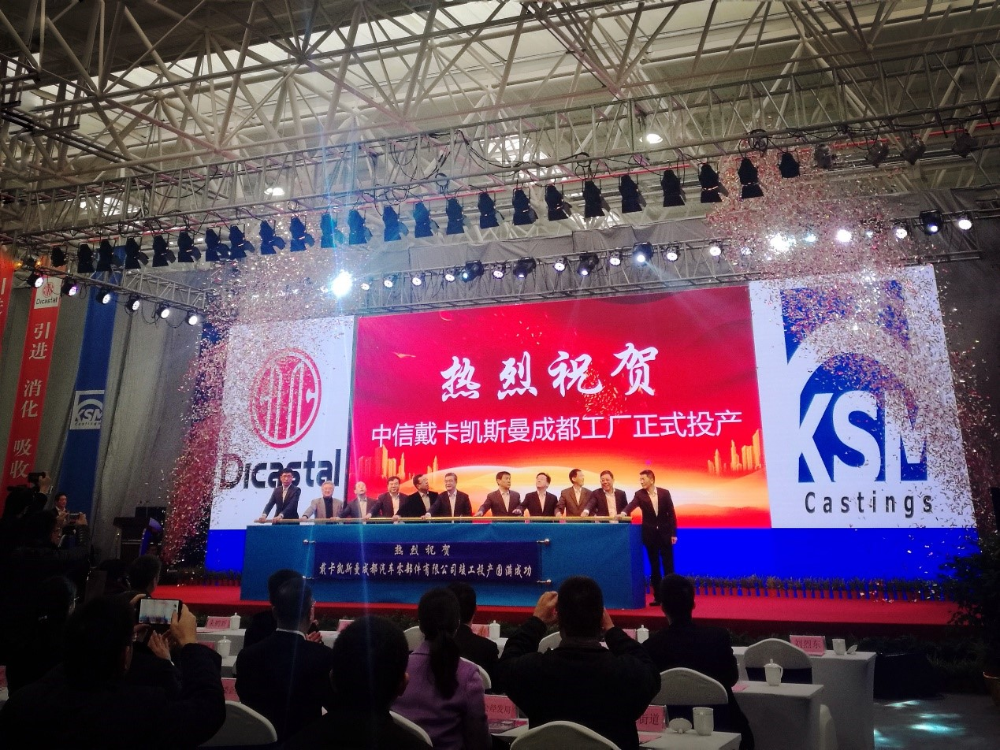

Innerlich Suche：
Impressum in 2017
 Ihre Stelle：Pressemitteilungen --> Impressum in 2017
Ihre Stelle：Pressemitteilungen --> Impressum in 2017Erfolgreicher Produktionsstart von CITIC Dicastal KSM Chengdu Werk
Am 3. Januar 2017 fand die Eröffnungszeremonie von Dicastal KSM Chengdu Auto Parts Co., Ltd in Chengdu statt. Herr Wang Jiong (Vizepräsident und General Manager der CITIC Group), Herr CaiXiliang (General Manager der CITIC Group), Herr Xu Zuo (General Manager Assistent der CITIC Group &President von CITIC Dicastal), Herr Yan Ning (General Manager der CITIC Group strategische Entwicklungsabteilung), Herr Tang Wanyuan und Herr Guo Yuemei (Präsident von CITIC Engineering Design &Construction Co., LTD), sowie Herr Zhu Hexin (stellvertretender Gouverneur der Provinz Sichuan) nahmen an der Zeremonie mit anderen Offiziellen teil. Anlässlich der Zeremonie haben Herr Liu Liedong (stellvertretender Bürgermeister der Stadt Chengdu) und Herr CaiXiliang (stellvertretender Generaldirektor der CITIC Group), Reden gehalten. Herr Zhu Hexin (Vize-Gouverneur der Provinz Sichuan) kündigteden offiziellen Produktionsstart im Dicastal KSM Chengdu Werk an. Nach der Zeremonie besuchten die Teilnehmer die Produktionslinie von Dicastal KSM Chengdu Werk.
Das Dicastal KSM Chengdu Werk, mit einer Fläche von 130.666 m2, wurde im März 2016 begonnen zu bauen. Der Bau hat nur 9 Monate gedauert. Es ist das neunte Werk der KSM-Gruppe mit einer jährlichen Produktionskapazität von 20.000 Tonnen. Das ist ein gutes Beispiel für den industriellen Transfer und die industrielle Modernisierung von CITIC Dicastal.
Das Dicastal KSM Chengdu Werk, mit einer Fläche von 130.666 m2, wurde im März 2016 begonnen zu bauen. Der Bau hat nur 9 Monate gedauert. Es ist das neunte Werk der KSM-Gruppe mit einer jährlichen Produktionskapazität von 20.000 Tonnen. Das ist ein gutes Beispiel für den industriellen Transfer und die industrielle Modernisierung von CITIC Dicastal.
